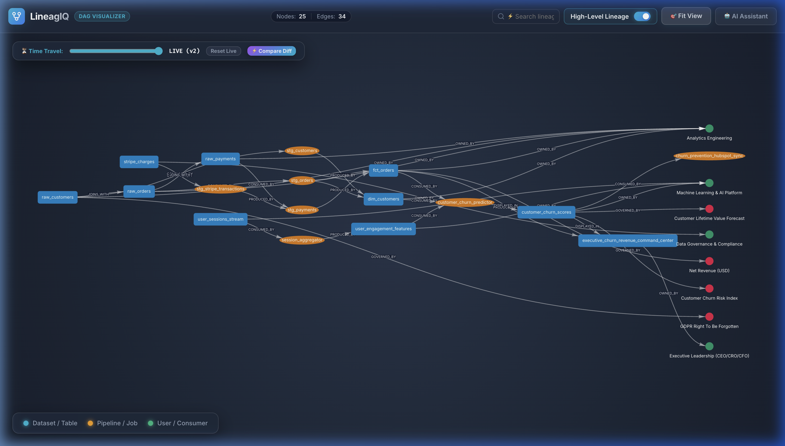
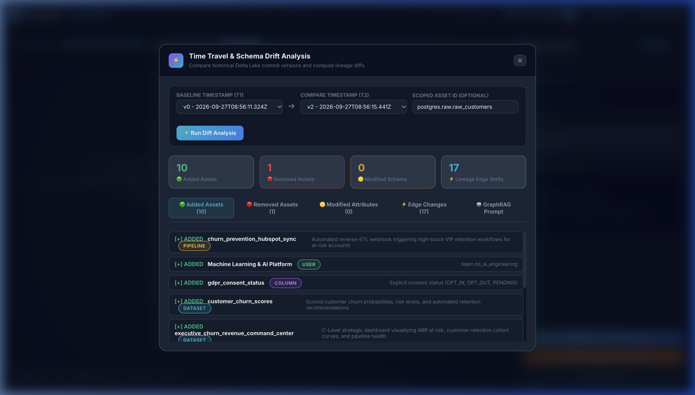
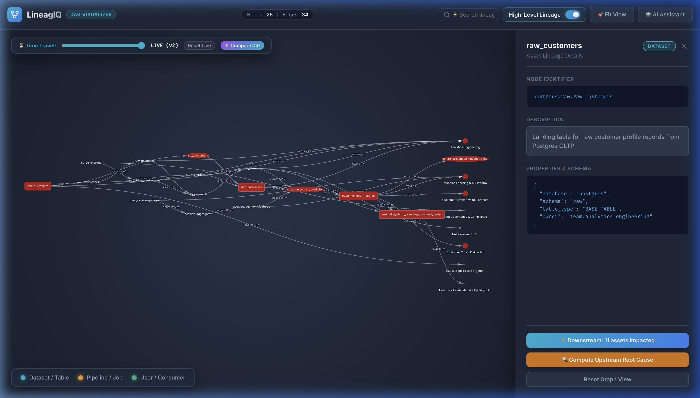
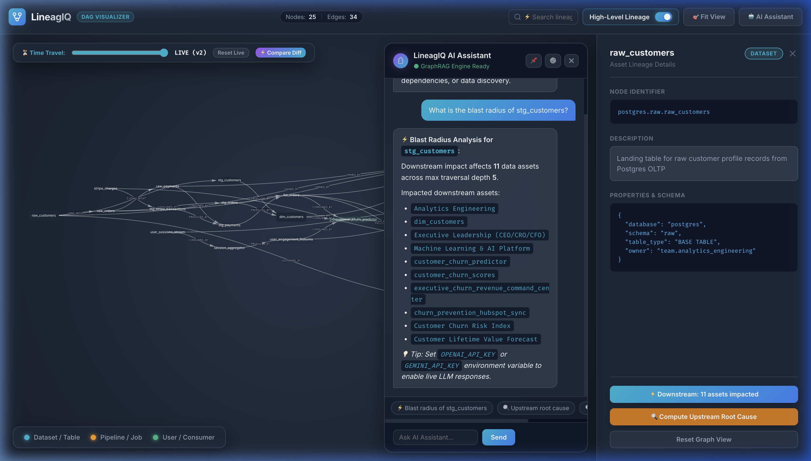

LineagIQ transforms complex, multi-cloud enterprise data pipelines into a continuous, queryable knowledge graph. Featuring point-in-time time-travel schema drift analysis, instant recursive blast-radius intelligence, and a radically slim serverless architecture with zero expensive graph clusters.

Data pipelines break silently when an upstream team alters a column type or drops a field without notice. LineagIQ tracks every schema revision and lineage modification across time using Delta Lake's transactional commit logs.

Before engineering modifies an upstream landing table or refactors a dbt model, LineagIQ calculates the downstream blast radius in milliseconds—guaranteeing zero unexpected outages for C-level dashboards.

LineagIQ pairs its semantic graph with an autonomous AI Assistant. Using Graph-Augmented Generation (GraphRAG), LLMs reason over your actual data topology with zero hallucination.

The LineagIQ Collection Agent runs statelessly and securely inside your private VPC, CI/CD runner, or Kubernetes cluster. It extracts schema contracts, SQL catalogs, query histories, and orchestrator run events into normalized Graph payloads and dense vector embeddings—without exposing raw customer data.
Directly ingests manifest.json and catalog.json compilation artifacts. Extracts models, seeds, snapshots, source tables, column documentation, tags, tests, and compiles the complete dependency graph into DERIVED_FROM lineage edges.
python -m collection_agent.src.cli --dbt-manifest <path> --dbt-catalog <path>
Parses standard INFORMATION_SCHEMA.TABLES, COLUMNS, and foreign key constraint dictionaries. Maps table/view hierarchies, column data types, ordinal positions, nullability flags, and physical JOINS_WITH relationships across relational warehouses.
python -m collection_agent.src.cli --sql-schema <path_to_schema.json>
Mines operational query logs (Snowflake QUERY_HISTORY, BigQuery INFORMATION_SCHEMA.JOBS, Databricks Query History). Identifies real-world user dataset consumption patterns (CONSUMED_BY), execution frequencies, and implicit multi-table join predicates.
python -m collection_agent.src.cli --query-logs <path_to_logs.json>
Parses standard OpenLineage JSON run events emitted by workflow orchestrators and distributed compute engines. Seamlessly extracts job execution run IDs, event timestamps, pipeline input datasets (CONSUMED_BY), and output datasets (PRODUCED_BY).
OpenLineage Extractor: parse_event(event_data)
Legacy enterprise catalogs mandate dedicated Neo4j, TigerGraph, or AWS Neptune clusters with 24/7 memory footprints, heavy JVM overhead, and specialized query skillsets. LineagIQ re-architects graph intelligence from first principles.
Engineered for software engineers, platform architects, and data engineers. LineagIQ decouples semantic modeling from ingestion and query runtime.
Runs as an ephemeral Kubernetes CronJob or GitHub Action inside customer VPCs. Extracts metadata from static files and read-only catalogs.
Standard Amazon S3 / GCS bucket prefixes or local directory (configured via unified DATA_PATH) storing nodes, edges, and dense vector embeddings with immutable ACID transaction logs.
FastAPI microservice executing C++ DuckDB recursive CTE graph queries directly over S3 Delta tables. Powers Web UI and GraphRAG APIs.
Rather than relying on proprietary graph languages, LineagIQ leverages DuckDB's vectorized execution engine using standard recursive Common Table Expressions (CTEs) executed directly against Delta snapshots:
-- LineagIQ Recursive Downstream Lineage Traversal
WITH RECURSIVE downstream_traverse AS (
-- Anchor: Immediate downstream dependencies of target node
SELECT source_id, target_id, type, 1 as depth
FROM delta_edges_view
WHERE source_id = 'postgres.raw.raw_customers'
AND type != 'BELONGS_TO'
UNION ALL
-- Recursive Step: Multi-hop graph expansion up to max_depth
SELECT e.source_id, e.target_id, e.type, d.depth + 1
FROM delta_edges_view e
JOIN downstream_traverse d ON e.source_id = d.target_id
WHERE d.depth < 5 AND e.type != 'BELONGS_TO'
)
SELECT DISTINCT source_id, target_id, type, depth
FROM downstream_traverse;Integrate LineagIQ's retriever tools into your Python AI frameworks (LangChain, AutoGen, LlamaIndex) with three lines of code:
from openai import OpenAI
from control_plane.src.agent_tools import (
get_dataset_blast_radius,
get_lineage_time_travel_diff
)
# 1. Retrieve Graph Context & Synthesized GraphRAG Prompt (configured via DATA_PATH)
blast_radius_prompt = get_dataset_blast_radius(
node_id="postgres.raw.raw_customers",
max_depth=5
)
# 2. Dispatch Context to LLM of your choice (OpenAI, Gemini, or local Ollama)
client = OpenAI()
response = client.chat.completions.create(
model="gpt-4o",
messages=[
{"role": "system", "content": "You are LineagIQ AI Agent, an expert enterprise data architect."},
{"role": "user", "content": blast_radius_prompt}
]
)
print(response.choices[0].message.content)
LineagIQ services run as lightweight, standalone Docker containers sharing a mounted volume or remote object store via a single DATA_PATH environment variable:
# 1. Generate 3-Version Time-Travel Demo Dataset in Docker
docker run --rm \
-v $(pwd)/data:/data \
lineagiq-collection-agent:latest \
--multiversion-demo
# 2. Launch Serverless Control Plane & Web Visualizer (Port 8000)
docker run -d --name lineagiq-control-plane \
-p 8000:8000 \
-e DATA_PATH=/data \
-v $(pwd)/data:/data \
lineagiq-control-plane:latest
# Or launch entire stack via Docker Compose:
docker compose up -d control_plane